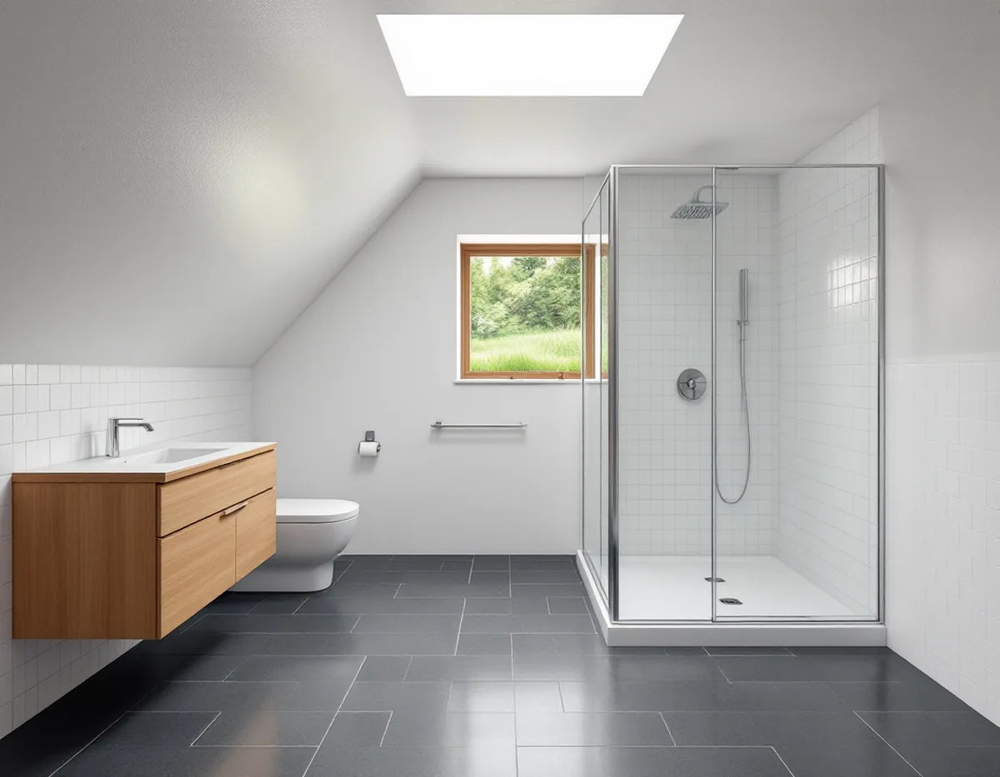
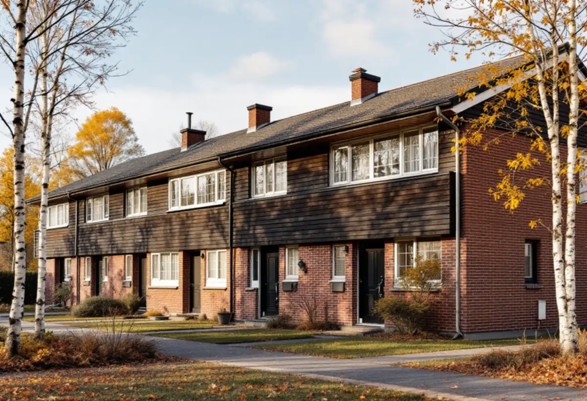

Platsbesök
Vi ser rummet och frågar om huset är äganderätt, bostadsrätt eller del av en samfällighet.
I Upplands Väsby sitter många badrum i radhus och kedjehus som byggdes i grupper på 1960- och 70-talen, ibland i ett nedre plan i suterräng. Badrummet är ditt, men ledningarna och reglerna kan vara gemensamma med grannarna. Geal Entreprenad AB river, bygger tätskikt och ytskikt och samordnar VVS och el, med gratis platsbesök och skriftligt kostnadsförslag.

Kommunens kunskapsunderlag för kulturmiljö beskriver hur de östra kommundelarna har vuxit fram med en stor andel småhus och radhus från 1960- och 70-talen. Husen är rationellt byggda i en eller två våningar, ibland två våningar i suterräng, och grupperna är olika sinsemellan men enhetliga inom varje grupp.
Att husen är byggda samtidigt syns också under golvet. På sidan om ledningsnät och anslutning skriver kommunen att flera fastigheter bara får dela en förbindelsepunkt för spill- eller dagvatten om de har bildat en gemensamhetsanläggning, och det är då samfällighetsföreningen som är kommunens motpart. Ligger en sådan anläggning under radhuslängan är det klokt att fråga föreningen innan en ny golvbrunn eller toalett kopplas på.
Kommunen påpekar också att dagvatten och dräneringsvatten inte får kopplas till spillvattenservisen, och att eget vatten inte får kopplas ihop med kommunens. Vid skador på en privat VA-anläggning kan VA-jouren hjälpa till med att stänga av vattnet, och vilka ledningar som finns utanför tomtgränsen går att beställa via Ledningskollen.

Ett badrum i ett nedre plan som ligger delvis under mark har en annan fuktsituation än ett rum på entréplan. GVK:s regel om tillskjutande markfukt säger att man vid fukt underifrån ska utreda i vilka delar av utrymmet tätskiktet behövs, och att tätskiktsprodukten ska vara avsedd för underlag med tillskjutande fukt.
Fukten kan kontrolleras genom att man säkerställer att det finns ett kapillärbrytande material eller värmeisolering under golvet, vilket kan framgå av konstruktionsritningen, eller genom en fuktsäkerhetsprojektering som görs av en fuktsakkunnig. Det är beställarens ansvar att den görs. Vi börjar därför med att leta fram husets ritningar och se hur grunden är uppbyggd.
Det finns särskilt anpassade vätskebaserade tätskikt för rum med fukt underifrån, och GVK råder att alltid stämma av med leverantören innan tätskiktet läggs. I ett radhus där flera grannar har samma planlösning kan samma fråga dessutom gälla hela längan.
Bor du i ett radhus som tillhör en bostadsrättsförening är det föreningen som äger huset, och då gäller bostadsrättslagen. Enligt bostadsrättslagen 7 kap. 7 § får du inte utan styrelsens tillstånd göra ingrepp i bärande konstruktion, installera eller ändra ledningar för avlopp, värme, gas eller vatten eller ändra ventilationen. Styrelsen får säga nej bara om åtgärden är till påtaglig skada eller olägenhet för föreningen, och den som är missnöjd kan begära att hyresnämnden prövar frågan.
En badrumsrenovering berör i regel flera av punkterna. Sök därför styrelsens tillstånd innan hantverkare bokas, och fråga samtidigt vilka krav föreningen har på dokumentation av tätskikt och VVS.
Rotavdrag för en bostadsrätt gäller bara arbete inne i lägenheten. Köket i samma typ av radhus beskrivs under köksrenovering i Upplands Väsby.
Spillvattnet från Väsby renas i Käppalaförbundets reningsverk på Lidingö. På kommunens sida om avlopp står att målarfärg, lacknafta, lösningsmedel och andra kemikalier aldrig får hällas i avloppet, eftersom de skadar mikroorganismerna i reningsverket. Under en renovering gäller det till exempel rester av färg och primer, som i stället ska tas om hand separat och inte spolas ner i golvbrunnen.
Dricksvattnet kommer från Mälaren och produceras av Norrvatten i Görvälnverket. Kommunen påminner om att varmvatten inte ska användas till mat och dryck, eftersom varmvattenledningar inomhus ofta är gjorda av koppar som löses ut. Fasaderna och färgerna i radhusgrupperna beskrivs under målare i Upplands Väsby.
Vi ser rummet och frågar om huset är äganderätt, bostadsrätt eller del av en samfällighet.
Vi letar fram husets ritningar och ser om badrummet ligger mot mark.
Rivning, tätskikt, VVS, el och ytskikt står var för sig i ett skriftligt förslag.
Rummet rivs, och rivningsavfall och kemikalierester sorteras och körs bort.
Fall mot golvbrunnen, tätskikt anpassat för underlaget och installationer av behöriga installatörer.
Kakel och porslin monteras, och du får underlaget som föreningen kan begära.
Avdraget är 30 procent av arbetskostnaden, högst 50 000 kr per person och år och högst 75 000 kr tillsammans med rutavdrag. I ett radhus med äganderätt gäller det hela badrummet, i en bostadsrätt bara arbete inne i lägenheten.
Material ger inget avdrag. Geal drar avdraget direkt på fakturan.
Om badrummet ligger mot mark, om golvbrunn och ledningar behöver bytas, hur stort rummet är och vilka ytskikt du väljer. Platsbesöket är gratis, och du får ett skriftligt kostnadsförslag.
Tätskikt, golvbrunn, el, VVS och intyg.
Badrumsrenovering i Stockholm →Takbyte, takbesiktning och plåtarbeten.
Takläggare i Upplands Väsby →Bollstanäs, Vilunda och Runby.
Takrenovering i Upplands Väsby →Karta, VA och tomtgräns.
Byggföretag i Upplands Väsby →Radhus från 70-talet och hus från bomässan.
Fasadrenovering i Upplands Väsby →Inflygning, trafik och tystare fönster i Väsby.
Fönsterbyte i Upplands Väsby →Kedjehus, suterräng och radon.
Golvläggare i Upplands Väsby →Radhus, kedjehus och atriumhus.
Köksrenovering i Upplands Väsby →Radhus, kedjehus och villor i Väsby.
Målare i Upplands Väsby →Rännor, stuprör och radhusplåt i Väsby.
Plåtslagare i Upplands Väsby →Altan, plank och förråd vid radhus och kedjehus.
Snickare i Upplands Väsby →Radhus, kedjehus och utpekade områden.
Tillbyggnad i Upplands Väsby →